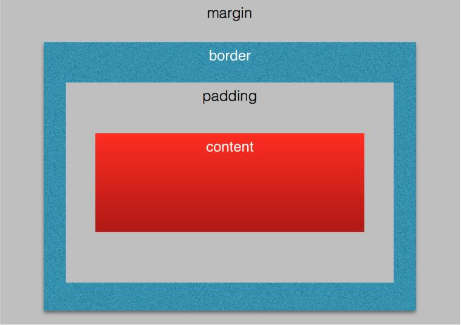
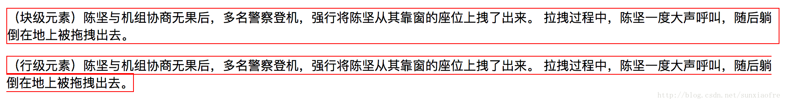
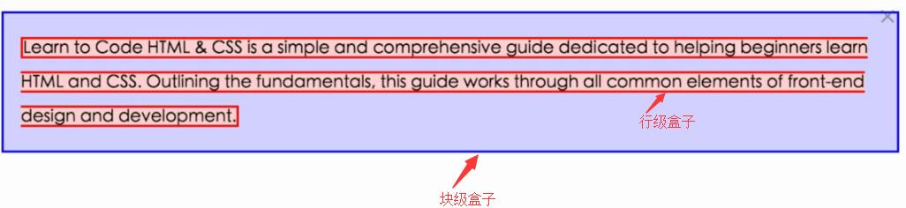
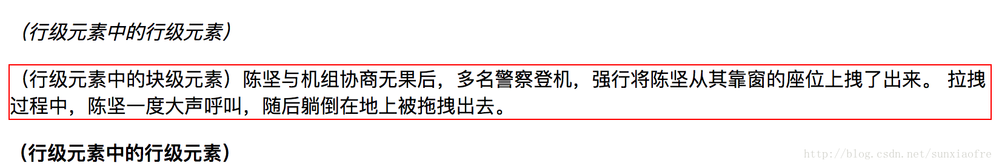

box model

width
- 指定的是
content box的宽度,不包含padding、border、margin的宽度,仅仅包含content的宽度。 - 百分数是指相对于父容器（包含块）的
content box的宽度。
height
- 指定content box高度。
- 百分数是相对于父容器（
包含块）的content box的高度。 - 只有当包含块的高度不依赖该元素时,其实就是父元素的高度确定值不为
auto,百分比高度才生效。 - 根元素是viewport,高度确定,所以只需将html元素的height设为100%,body才可以设置100%
1
2
3
4
5
6
7
8
9
10
11
12
13
14
15
16
17
18
19
20<div class="container">
<div class="child">
哈哈哈哈哈哈
</div>
</div>
<style>
body {
margin: 0
}
.container {
background: #f00;
height: 100vh;
}
.child {
height: 100%;
background: coral;
}
</style>
padding
- 内边距：内容距离盒子的距离
- padding-top、padding-right、padding-bottom、padding-left
- 缩写：padding:
上 右 下 左 - 两个值：padding:
上下、左右 - 三个值：padding:
上、左右、下
margin
- 外边距：一个盒子距离另外一个盒子的距离，不能超过这个数
- margin-top、margin-right、margin-bottom、margin-left
- 缩写：margin
- margin折叠：margin的真正含义是：在这个盒子外多远的距离内不能再摆放其他的盒子！
- margin可以为负值吗?:可以的。负值意味着两个盒子有重叠，即允许这个盒子和其他的盒子重叠多少
box-sizing（CSS3新增）
- 改变盒模型的计算方式
- 取值：
border-box(padding+content+border) | content-box - 初始值：content-box
1
2
3
4
5
6
7
8
9*{
box-sizing:inherit
}
html{
box-sizing:border-box;
}
.book{
box-sizing:content-box;
}
border
- 边框的三个要素：
- border-width：< length > | thin | medium | thick
- border-style:none | solid | dashed | dotted | double
- border-color:< color >
- 边框的四个方向：
- border-top
- border-right
- border-bottom
- border-left
实战
当width,height设置0时,我们可以实现各种三角形了
1 | <div class="box"></div> |
max-width && max-width
- 可以通过设置article的min-width和max-width来做文字的排版,特别是响应式的布局时比较有用。
1
2
3
4article{
max-width:40em;
min-width:20em;
}
min-height && max-height
min-height可以在内容少的时候,把容器撑开
1 | article{ |
overflow
- 溢出控制
- 取值：visible | hidden | scroll |auto
- 初始值：visible
视觉格式化模版-浏览器是怎么排版的?
视口（Viewport）
- 浏览器的可视区域
- 用户通过视口查看网页内容（透过窗户看风景）
块级元素（Block-level Elements）
- 会被格式化成块状的元素，一块一块的，另起一行。
- 例如：p、div、section等
- 将display设置为block、list-item、table使元素变为块状
行级元素／内联元素（Inline-level Elements）
- 不会为其内容生成块级框
- 让其内容分布在多行中
- display设置为inline、inline-block、inline-table使元素变为行级元素

盒子的生成
元素与盒子是两个不同的概念,元素是HTML中一个个的标签;盒子是在排版的时候,浏览器在摆放的时候会生成一个一个的盒子,一个元素可能生成多个盒子。

- 每个块级元素生成一个主块级盒（principal block-level box）,用它来包含子级盒
- 每个行级元素生成一个行级盒子，行级盒分布于多行。
Box Model - revisited
- margin：行级盒的margin-top和margin-bottom不会产生效果。但是行级盒的margin-left和margin-right会有效果。
- padding：行级盒的padding-top和padding-bottom不影响布局，不会影响元素的摆放。
块级盒子中的字盒子的生成
- 块级盒子中可以包含多个子块级盒子
- 也可以包含多个行级盒子
- 不在行级元素里面的盒子，会生成
匿名行级盒。比如<p>Some<em>Text</em></p> - 块级盒子中不能同时包含块级和行级盒子。遇到这种会生成匿名块级盒子来包裹行级盒。比如
<div><h1>标题</h1><span>2018-12-12</span></div>行级盒子内的子盒子的生成
- 行级盒子内可以包含行级盒子
- 行级盒子包含一个块级盒子时,会被块级盒子拆成两个行级盒子，这两个盒子又分别被匿名块级盒包含
1
2
3
4
5
6<span>
<em>（行级元素中的行级元素）</em>
<p>（行级元素中的块级元素）陈坚与机组协商无果后，多名警察登机，强行将陈坚从其靠窗的座位上拽了出来。
拉拽过程中，陈坚一度大声呼叫，随后躺倒在地上被拖拽出去。</p>
<strong>（行级元素中的行级元素）</strong>
</span>

display属性
- block生成块级盒
- inline生成行级盒
- inline-block生成行级盒（不会换行），为其内容生成块级盒（可以设置width、height、margin、border、padding）
- none在排版时将元素忽略（不展示此元素）
visibility（相当于是透明的）
- 控制元素展示（明明在那里，但是对你不可见）
- 取值：visible | hidden | collapse
- 初始值为 visible
Generated Content
- 控制元素。这个元素在CSS中多产生一个盒子，用来存放指定的内容
- ::before和::after
- content
打印的时候可以使用
1 | <a href="http://www.baidu.com">点击访问</a> |